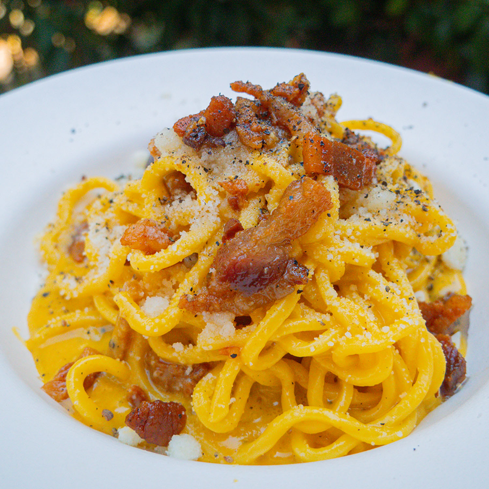

Carbonara Recipe

How to make Carbonara
Carbonara is a dish typical of Rome in Italy
Many people have their own way of cooking it but there is only one true carbonara, and this is the one thic recipe is about
Ingredients
- 300g pasta - spaghettoni is often the pasta of choice for carbonara, but spaghetti, bucatini or rigatoni will suffice
- 100g guanciale
- 2 whole eggs and 3 egg yolks (1 whole and 1 yolk pp, plus one for the pot for extra creamy goodness)
- 150g Pecorino Romano - very finely grated
- Lots of ground black pepper - quantities will be divulged in the method notes
Steps
- Cut the hard skin off the guanciale, slice it lengthways into 1cm strips and then cut into 1 cm pieces.
- Bring a large pot of salted water to boil for your pasta.
- In a separate pan start to fry off the guanciale on a gentle heat - no need to add any oil as its fat will melt.
- Meanwhile in a bowl add your eggs (whole and yolks) and beat well. Stir through the grated pecorino and a really decent amount of freshly cracked black pepper (depending on your tolerance and preference for pepper ~ measuring 1/2 tbsp). Set aside.
- When the guanciale is nice and crisp, turn off the heat and using a slotted spoon remove the guanciale from the pan and onto a plate - reserve the fat in the pan.
- Add the pasta to your boiling water and cook for approx a minute under packet instructions (just before it’s al dente).
- Add the pasta directly to the pan with the guanciale fat (reserving the pasta water) taking some of the pasta water with it. Turn the heat back on the lowest flame, and allow the pasta to continue to gently cook, giving it a toss in the guanciale fat.
- Add a 1/3-1/2 cup of the pasta water to the egg mixture and stir well until the pecorino and egg mix is nice and smooth and quite liquid, like pouring cream.
- Take the pan with the pasta/guanciale off the heat, pour in the egg mix and stir, toss and mix continuously until it starts to thicken slightly and you have a stable emulsion. At this point you can put the pan back onto a low heat/flame and keep stirring/moving constantly until you’ve worked the egg mixture into a beautiful crema, similar to béchamel. It’s important to keep the sauce moving constantly as you use the heat to thicken.
- Stir through the reserved guanciale before serving.
- Serve immediately!! With extra black pepper and a dusting of pecorino.
Other recipes